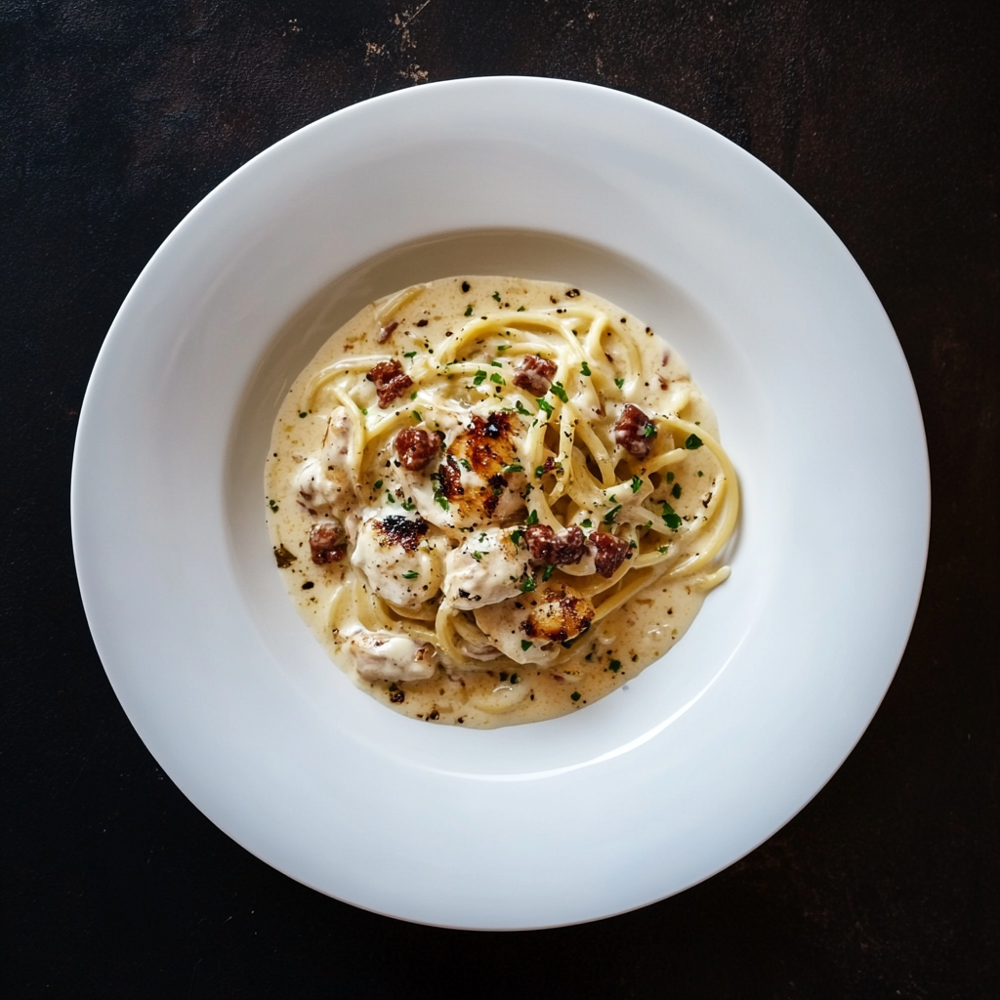
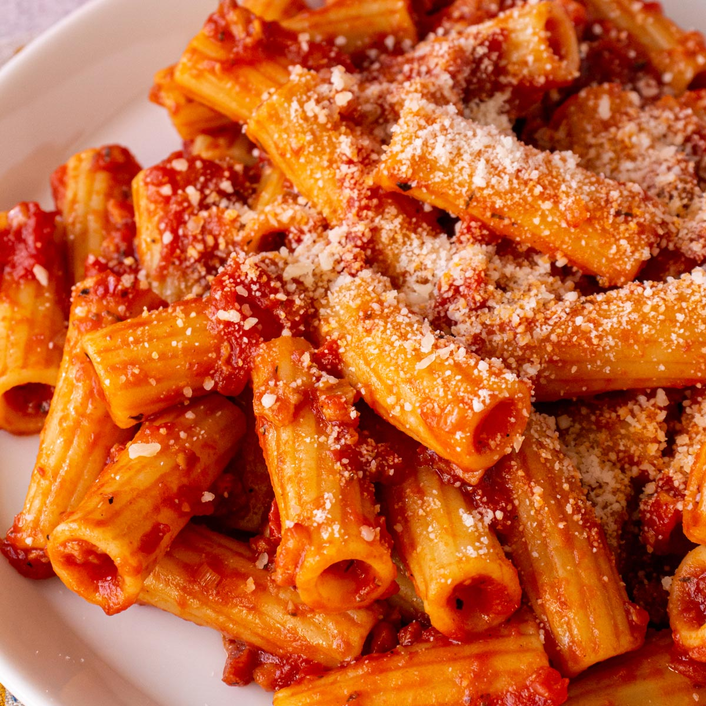
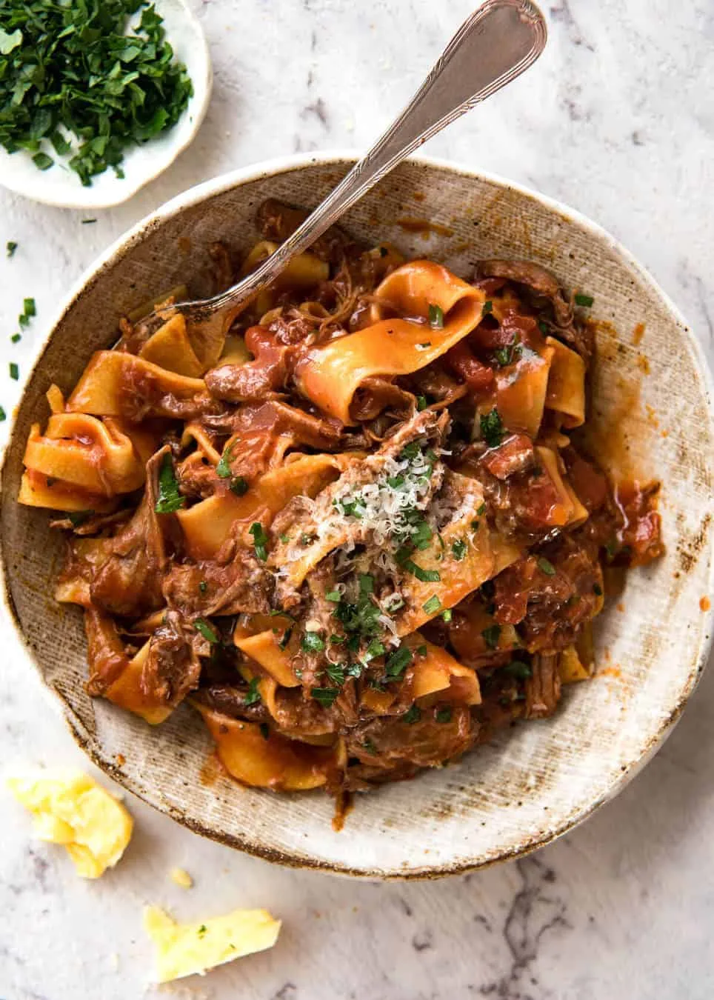

Spaghetti Carbonara

A creamy pasta made with eggs, cheese, guanciale, and pepper.
- Spaghetti
- Eggs
- Pecorino Romano
- Guanciale
Pasta Amatriciana

A tomato pasta flavored by guanciale and dried chili flakes.
- Guanciale
- Rigatoni
- Tomatoes
- Dried Chili Flakes
- Pecorino Romano
Paparadele Ragu

A hearty meat sauce made with guanciale and tomatoes.
- Paparadele
- Guanciale
- Tomatoes
- Red Wine
- Onion
- Garlic